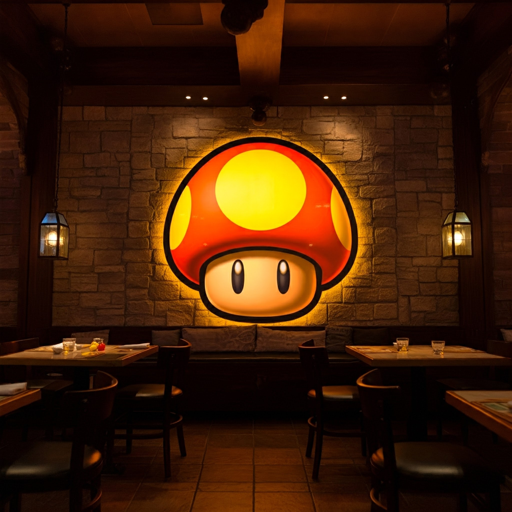

Nuestra Historia
Desde 1985, Restaurante Champiñón ha sido un referente en la gastronomía local de Molina de Segura.
Con más de 35 años de experiencia, nuestro acogedor establecimiento de 10 mesas ofrece una experiencia culinaria única, donde la tradición se fusiona con la innovación.
Especializados en cocina mediterránea y carnes a la brasa, nuestro chef ejecutivo y su equipo seleccionan cuidadosamente los ingredientes más frescos del mercado para crear platos excepcionales.
Nuestros Valores
- Calidad en productos frescos
- Atención personalizada
- Ambiente familiar
- Cocina tradicional renovada